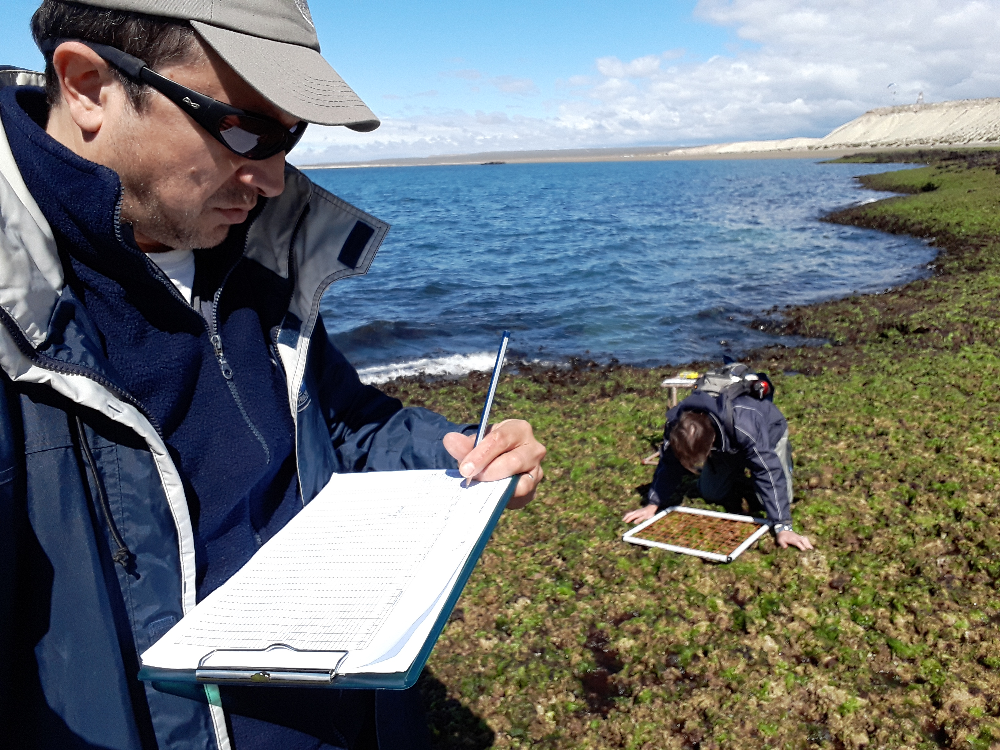
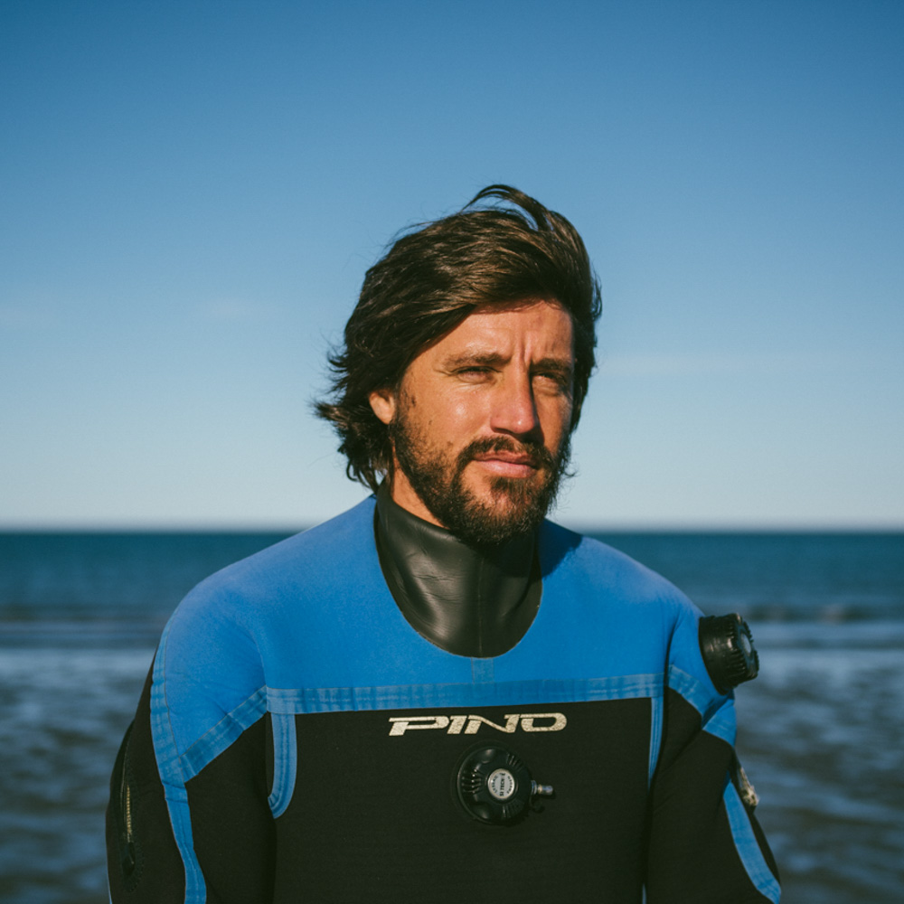
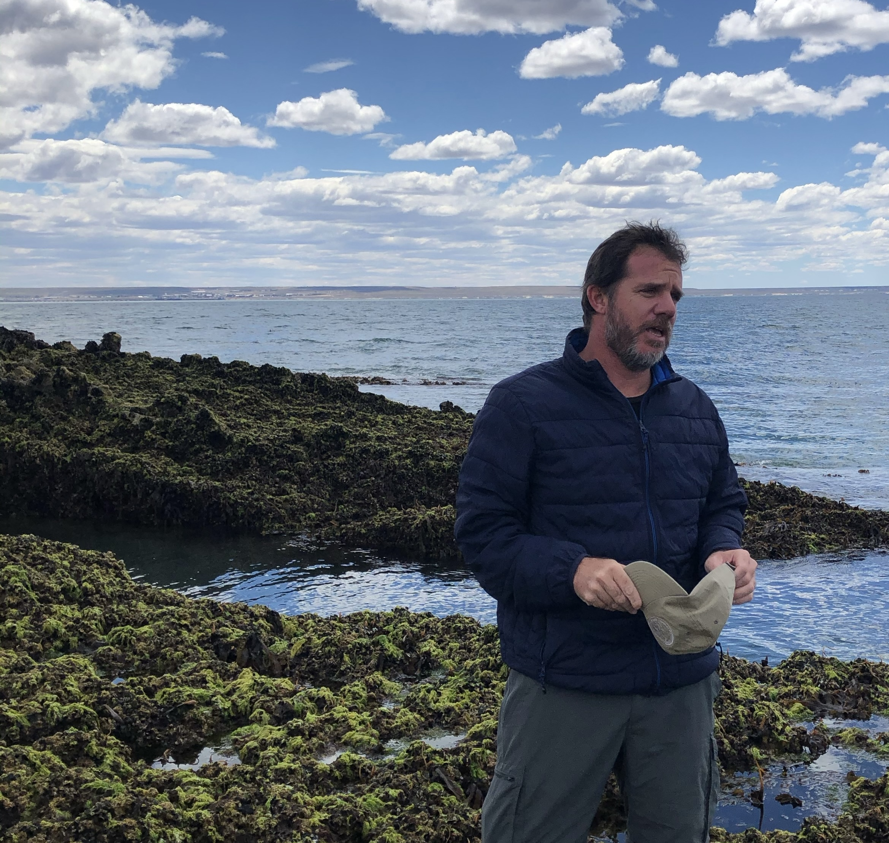
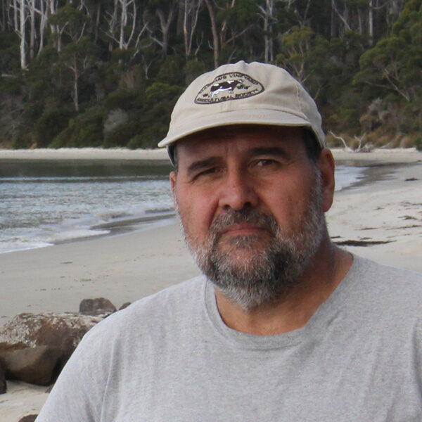
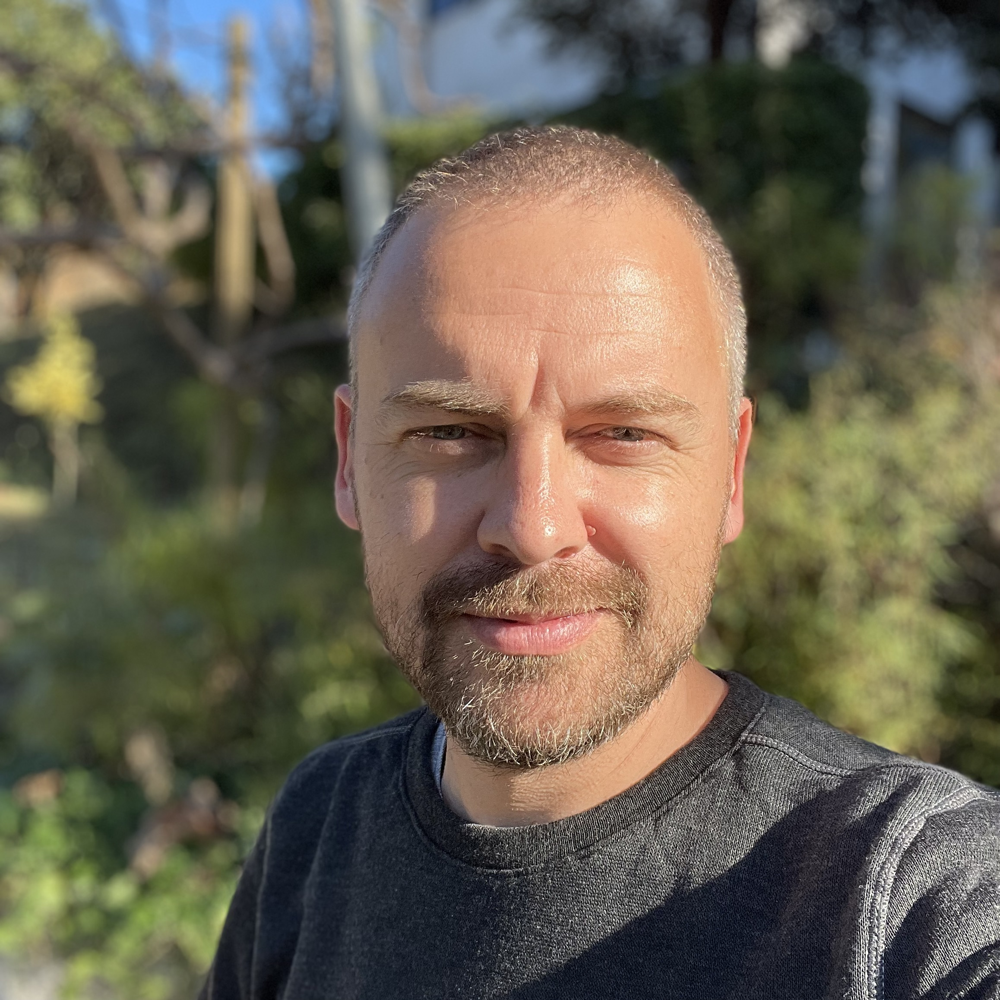
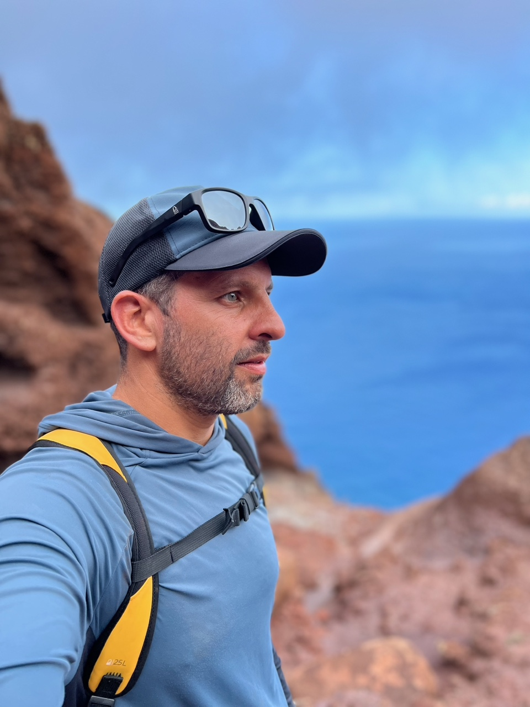

Gregorio Bigatti obtuvo su titulo de Licenciado y finalizó su Doctorado en Ciencias Biológicas en la Facultad de Ciencias Exactas y Naturales de la Universidad de Buenos Aires (UBA). Actualmente es Investigador Principal de CONICET, con lugar de trabajo en el Instituto de Biología de Organismos Marinos en el CCT CONICET-CENPAT, de la ciudad de Puerto Madryn donde fundó el Laboratorio de Reproducción y Biología Integrativa de Invertebrados Marinos (LARBIM) en el año 2007. Es profesor adjunto de la Universidad Nacional de la Patagonia San Juan Bosco (UNPSJB). Participa activamente en el proyecto (MBON) desde sus inicios siendo encargado de muestreos en la Patagonia Argentina. A su vez realiza actividades de divulgación científica y educación focalizadas en la conservación de los ambientes costeros marinos.

Gonzalo Bravo es licenciado en Ciencias Biológicas de la UNPSJB , Magister en Oceanografía de la Universidad de Quebec en Rimouski y actual estudiante doctoral del CONICET. Gonzalo es buzo científico con más de 3000 buceos en aguas patagónicas, ha participó en expediciones científicas en el Ártico, en las Islas Galápagos, Canal Beagle, e Isla de Los Estados. Entre sus búsquedas académicas se encuentra la inclusión de la Inteligencia Artificial para analizar imágenes del fondo marino.

Enrique Montes es oceanógrafo biológico del Instituto Cooperativo de Estudios Marinos y Atmosféricos (CIMAS) de la Universidad de Miami, y el Laboratorio Oceanográfico y Meteorológico del Atlántico (AOML) de la NOAA. Su investigación explora las respuestas de la vida marina a cambios en las condiciones atmosféricas y oceanográficas integrando mediciones medioambientales, bioópticas, genómicas y taxonómicas in situ con datos satelitales para entender el contexto oceanográfico de observaciones locales y caracterizar la biogeografía regional. Es Co-investigador de la Red de Observación de la Biodiversidad Marina (MBON) en Estados Unidos y a escala internacional, y el Investigador Principal de la Red MBON Polo a Polo de las Américas (MBON Pole to Pole). Enrique preside la Asociación Internacional de Oceanografía Biológica (IABO y es miembro del Comité Ejecutivo del Comité Científico de Investigaciones Oceánicas (SCOR).

Eduardo Klein es ecólogo con maestría en Manejo de Recursos Marinos con más de 25 años de experiencia académica en la enseñanza, capacitación, investigación y gestión de proyectos en ecología marina, evaluación de impacto ambiental, y estudios de línea base y monitoreo ambiental, con un uso extensivo de métodos estadísticos / numéricos para el análisis y la gestión de datos ecológicos marinos, oceanográficos y de sensores remotos. Tiene amplios conocimientos en los estándares de biodiversidad de Darwin Core y sus extensiones, la herramienta de publicación IPT, y el registro WoRMS. Eduardo está altamente experimentado en análisis estadísticos clásicos y modernos, y en el análisis de capas geoespaciales complejas, imágenes satelitales (productos terrestres y oceanográficos), series temporales oceanográficas, y bases de datos de biodiversidad marina para modelar y evaluar los patrones de biodiversidad marina, los impactos humanos en los ecosistemas marinos, y áreas prioritarias de conservación marina.

Fernando P. Lima es científico marino y jefe de grupo en CIBIO/InBIO, U. Porto, Portugal. Es profesor asistente invitado en ICBAS, U. Porto, y cofundador de ElectricBlue CRL, una start-up tecnológica que desarrolla instrumentos para el monitoreo medioambiental y el bio-logging. Cuenta con una amplia formación como biólogo marino estudiando las consecuencias del cambio climático en la biodiversidad y la biogeografía, desde escalas locales a continentales. Su investigación integra diversas disciplinas, como la climatología, la biogeografía, la electrónica, la ecología experimental, la fisiología y la modelización, hace un uso intensivo de datos e intenta integrar procesos y mecanismos que operan desde las escalas más finas a las más amplias. Actualmente realiza estudios de campo en las costas atlánticas de Europa, África, América y las islas del Atlántico medio. Ha trabajado en la reconstrucción y el análisis climáticos, demostrando que la temperatura desempeña un papel significativo en la configuración de las comunidades costeras modernas e históricas. Fernando es Investigador Principal de la iniciativa CCTBON, una red de colaboración a largo plazo para la observación de la temperatura y la biodiversidad en todo el Atlántico.

Rui Seabra es un biólogo marino que investiga el impacto del calentamiento global en los ecosistemas intermareales a escalas espacio-temporales amplias. Es co-director del proyecto de investigación CCTBON, que está implantando una red destinada a estudiar las temperaturas de las costas rocosas y los patrones de biodiversidad en más de 160 lugares de todo el Atlántico. Rui es también co-fundador de ElectricBlue CRL, una cooperativa tecnológica que desarrolla instrumentos para la vigilancia medioambiental y el bio-logging.